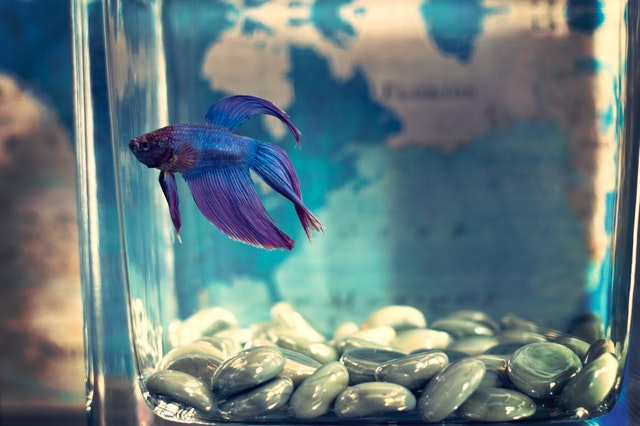
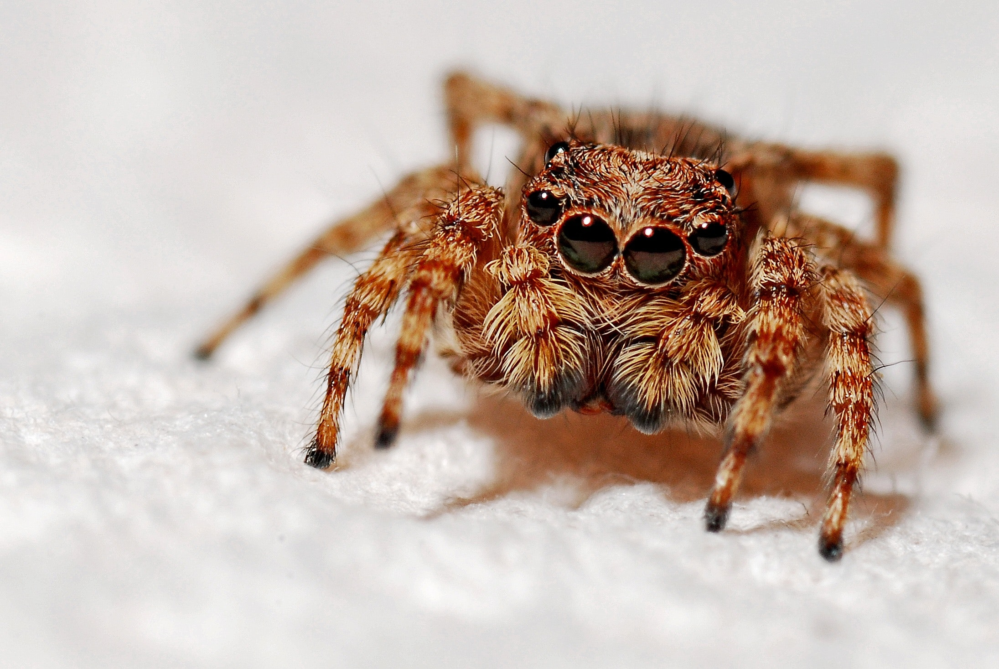

Choosing the Best Pets - What Pet is Right for me?
The best pets are those that make great companions. There are many different types of pets that could be right for you and be a wonderful complement to your life.
Your pet choice should be based on what sort of animal suits your personality, works best with your lifestyle and matches your needs.
As you explore the questions below you'll discover which animals are suitable for each situation, this will narrow down your selections and help you make the right pet choice.
Whether it’s a commonly kept pet such as a dog, cat or goldfish, a colorful and talkative parrot, or perhaps a scurrying lizard or fun-loving potbellied pig,
the animal you choose can bring you years of entertainment and happiness.
Kinds of pets
Fish

A fish may be the perfect “starter” pet for a child, but not just any fish will do.
Goldfish may seem like the most obvious choice, but they’re actually more difficult to raise than the Siamese fighting fish (Betta fish).
These Southeast Asian natives are adapted to survive in isolation, in surprisingly small amounts of stagnant water.
You may not even need aerators, filters, heaters, or chemicals.
However, betta fish thrive best in small aquariums with at least two gallons of water, regularly changed and kept between 76 and 82°F (24 and 28°C).
Be sure to buy your fish from a store that has someone who can advise you on how best to care for them.
Cats

Notoriously independent cats need somewhat less care and attention than dogs, but no less commitment.
Like dogs, cats require regular veterinary checkups and immunizations.
It’s important to choose a cat that’s suitable to be around children.
A cat may be a better choice than a dog if your family has limited living space.
Dogs
A cuddly puppy is probably the most classic children’s pet.
Keep in mind that choosing the ideal dog involves more than falling for big brown eyes.
Some dogs may be unsuitable for children. Before adopting a dog, ensure that the dog is well-socialized
and comfortable around children.
Any breed will need a significant commitment of time and effort.
Puppies must be housebroken and require daily exercise, regular veterinary checkups and immunizations and plenty of love.
Rodents

Smaller mammals, including hamsters, guinea pigs, and gerbils, are relatively easy to raise.
Also, most will thrive in a relatively small living space, and care is fairly straightforward.
Except for hamsters, which are solitary, it’s best to obtain young same-sex pairs.
Regular, gentle handling promotes friendliness. Be mindful, though, that bites are possible should rodents — especially hamsters — feel threatened.
Surprisingly, rats make excellent pets due to their intelligence, larger size, and enjoyment of human companionship.
Guinea pigs are also good kid-friendly pets.
Insects and arthropods

Six-legged creatures might not be the first to come to mind when thinking of pets for children.
However, owning an ant farm can be an entertaining and educational experience for a child.
Various suppliers sell habitats designed to let children directly observe ant activities.
Ants can be shipped live or grown from eggs.
Hermit crabs are another example of creepy crawlies that are easily raised in captivity.
Considerations for choosing a pet
When taking on the responsibility of a pet, you and each member of the family must be willing to commit to providing a good home for it.
Find out how much time each family member can devote to the pet.
Discuss each person’s responsibilities for the animal’s care, feeding, grooming, exercise, socialization and training.
Determine who will be responsible for the expenses involved, and make certain that every need for the pet you’re considering will be met.
Consider the following questions about yourself before committing to a pet.
- Home
Do you live in the city, suburbs or out in the country? How much space do you have indoors and out?
- Activities
Are you the active type, or is your time spent at home of a sedentary nature? Are you looking for an exercise companion or a pet to keep you company while you do things around the house?
- Physical Condition
Are you physically capable of taking care of the type of pet you’re considering? Caring for a large animal or one with extensive habitat needs can be physically demanding.
- Time
Do you spend much time at home? Some pets need someone with them most of the time, especially when they are young. Others can be left alone for long periods of time.
- Money
What is your budget? This is a very important consideration, because all pets require some degree of financial commitment. You’ll have to pay for food, housing and other daily needs, as well as veterinary care and any special needs your pet may have. These costs vary considerably from animal to animal.